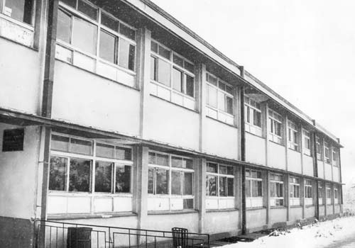

Die Anfänge des pädagogischen Prozesses in der Schule gehen auf das Jahr 1958 zurück, basierend auf
der am 7.X.1957 gefasste Beschluss, eine Gewerbeschule mit Praktikum zu errichten
Ausbildung in Bitola, mit der Aufgabe, Fachkräfte auf die Bedürfnisse vorzubereiten
Industrie
durch zwei Berufe - Mechaniker und Elektriker mit einer Dauer von drei Jahren und einer Kapazität von 300
Studenten.
Als der Bedarf an Fachpersonal in der Bitola-Wirtschaft wuchs, wurde die Einrichtung von
Technische Schule, die 1960 ihre Arbeit aufnahm, und bald darauf die Technische Schule für
Erwachsene und die Schule für Hochqualifizierte (Meisterschule). Diese Schule ist
gebildet nach Bedarf und Wunsch der damaligen Fabrik für Kühlschränke Bitola. Wie weiter
wuchs auf
den Bedürfnissen der Wirtschaft, so erweiterte und entwickelte sich die Schule. 1961 wurde innerhalb der Schule eine Höhere Fachschule eingerichtet. Später zeichnete es sich als besondere Bildungseinrichtung, Technische Fakultät, innerhalb der Universität "St. Kliment Ohridski" aus Bitola aus.

Die Entwicklung der Industrie in Bitola erforderte neue Mitarbeiter, die in keinem von ihnen ausgebildet wurden
Gymnasium in Bitola. Daher erfolgte im Studienjahr 1967/68 der Ausbau der
strukturell
Für Qualifizierte wird in der Schule eine Bildungsform und eine Schwachstromabteilung gebildet
Radio- und Fernsehmechanik und Elektroakustik.
Auch basierend auf den wachsenden Bedürfnissen von Fachleuten in der Textilindustrie in
Bitola, eine Textilschule, wurde innerhalb des Zentrums eröffnet.
Der Bedarf an Fachpersonal für die Wirtschaft hat die Notwendigkeit der Ausbildung von erforderlich gemacht
Experte
Lehrpersonal. Deshalb wird innerhalb der Schule ein Notfallzentrum eingerichtet
Studium an der Höheren Berufspädagogischen Schule von Rijeka-Republik Kroatien. Das Allmähliche
Bildung der genannten Schulen, Schulen und Zentren und deren Konzentration auf den Bau von
Die Gewerbeschule war Voraussetzung für die Gründung einer neuen Bildungsanstalt
professionelles Personal, elektromechanisches Schulzentrum.

Dieses Schulzentrum war nie eine mechanische Summe verschiedener Arten und Formen
beruflich
Bildung, sondern ein organisatorisches Ganzes, in dem es intern funktional eingerichtet wurde
Einheit und in der Mitarbeiter verschiedener Berufsbildungsstufen ausgebildet wurden.
So wie das,
Industrie, Technik, Technik für Erwachsene, Schule für Hochqualifizierte
Arbeitnehmer, die Höhere Technische Schule und das Lehrzentrum für Teilzeitstudium VPSH-Rijeka
sind
konzipiert und wuchs zu einer neuen Bildungseinrichtung EMUC "Gjuro Salaj" - Bitola.
Seine Aufgabe war es, für die Bedürfnisse der Wirtschaft zu erziehen und auszubilden:
-
Facharbeiter im Bereich Metall- und Elektrotechnik, durch
industriell
Schule mit praktischer Ausbildung.
- Techniker und Antriebstechniker durch die Elektromechanische Fachschule u
das Technische
Erwachsenenschule.
-
Hochqualifizierte Arbeitskräfte in der Metall- und Elektrotechnik, durch
die schule für hochqualifizierte arbeiter - meisterschule.
-
Leitende Techniker (Antriebstechniker) im Maschinenbau und der Elektrotechnik, durch
der höhere technikerschule.
- Berufsschullehrer, für berufliche Fächer und praktischen Unterricht im Maschinenbau u
Elektrotechnik durch das Lehrzentrum für Teilzeitstudium an der Hochschule -
Rijeka.
1997 wurde die Schule in DSEMU "Gjorgji Naumov" umbenannt und 2006 durch den Eintritt
Gewalt
des neuen Gesetzes über die kommunale Selbstverwaltung, in der Städtischen Höheren Technischen Schule oder abgekürzt
SOTU
"Gjorgji Naumov".
Heute folgt die Schule den modernen Trends für die Ausbildung von Qualitätspersonal
Elektrotechnik und Maschinenbau. Eine dieser Neuerungen ist die Einführung von Dual Professional
Ausbildung ab dem Studienjahr 2019/2020.